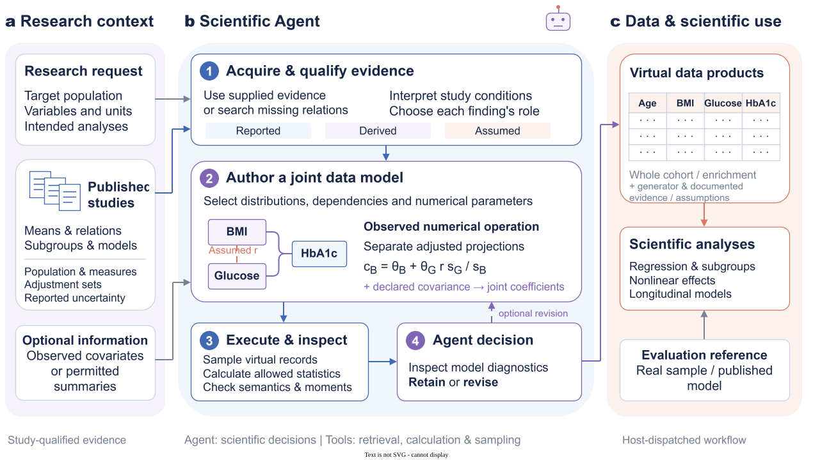
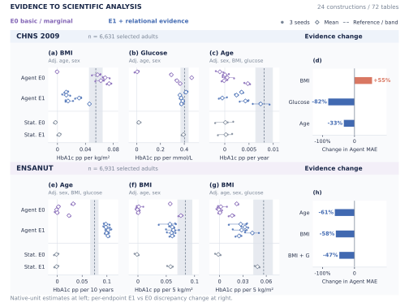
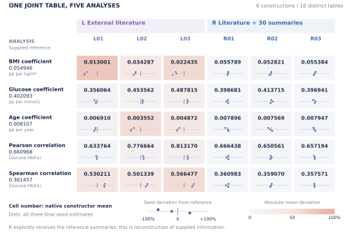
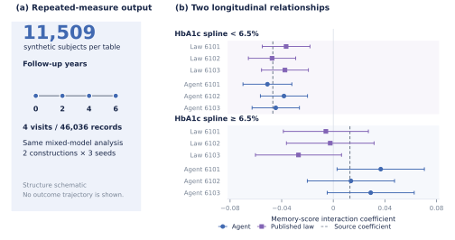
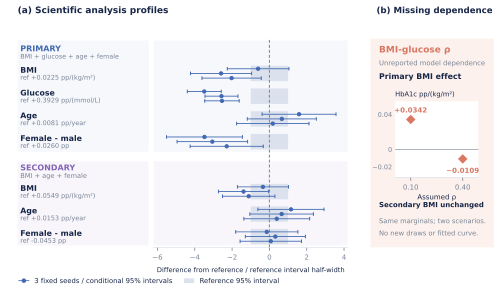

FIGURE 01
Agent framework
Research context → scientific construction → virtual data and analysis.



FIGURE 02
Evidence to scientific analysis
Two cohorts, all six endpoints, and the change associated with relational evidence.



FIGURE 03
One joint table, five analyses
Native means and all seed statistics in one analysis-by-constructor matrix.



FIGURE 04
Longitudinal scientific use
The actual four-visit record structure and both prespecified interaction terms.



FIGURE 05
Scientific profiles and missing dependence
All seven effects, with the two existing analytical scenarios shown alongside.


